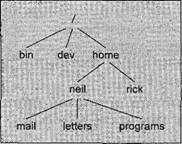
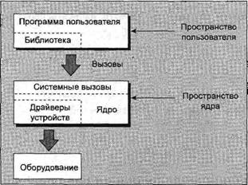

|
|||||||||||||||||||||||||||||||||||||||||||||||||||||||||||||||||||||||||||||||||||||||||||||||||||||||||||||||||||
|
|
Глава 3Работа с файлами В этой главе будут рассматриваться файлы и каталоги ОС Linux и способы работы с ними. Вы научитесь создавать файлы, открывать и читать их, писать в них и удалять их. Вы также узнаете, как программы могут обрабатывать каталоги (например, создавать, просматривать и удалять их). После сделанного в предыдущей главе отступления, посвященного командным оболочкам, теперь вы начнете программировать на языке С. Прежде чем перейти к способам обработки файлового ввода/вывода в системе Linux, мы дадим краткий обзор понятий, связанных с файлами, каталогами и устройствами. Для управления файлами и каталогами вам придется выполнять системные вызовы (аналог Windows API в системах UNIX и Linux), но, кроме того, для обеспечения более эффективного управления файлами существует большой набор библиотечных функций стандартной библиотеки ввода/вывода (stdio). Большую часть главы мы посвятим работе с различными вызовами, необходимыми для обработки файлов и каталогов. Таким образом, в данной главе будут обсуждаться разные темы, связанные с файлами: □ файлы и устройства; □ системные вызовы; □ библиотечные функции; □ низкоуровневый доступ к файлу; □ управление файлами; □ стандартная библиотека ввода/вывода; □ форматированный ввод и вывод; □ сопровождение файлов и каталогов; □ просмотр каталогов; □ ошибки; □ файловая система /proc; □ более сложные приемы — fcntlи mmap. Структура файла в LinuxВы можете спросить: "Зачем вы останавливаетесь на структуре файла? Я уже знаком с ней." Дело в том, что в среде Linux, как и UNIX, файлы особенно важны, поскольку они обеспечивают простую и согласованную взаимосвязь со службами операционной системы и устройствами. В ОС Linux файл — это все что угодно. Ну, или почти все! Это означает, что в основном программы могут обрабатывать дисковые файлы, последовательные порты, принтеры и другие устройства точно так же, как они используют файлы. Мы расскажем о некоторых исключениях, таких как сетевые подключения, в главе 15, но в основном вы должны будете применять пять базовых функций: open, close, read, writeи ioctl. Каталоги — тоже специальный тип файлов. В современных версиях UNIX, включая Linux, даже суперпользователь не пишет непосредственно в них. Обычно все пользователи для чтения каталогов применяют интерфейс opendir/readdir, и им нет нужды знать подробности реализации каталогов в системе. Позже в этой главе мы вернемся к специальным функциям работы с каталогами. Действительно, в ОС Linux почти все представлено в виде файлов или может быть доступно с помощью специальных файлов. И основная идея сохраняется даже, несмотря на то, что существуют в силу необходимости небольшие отличия от известных и любимых вами традиционных файлов. Давайте рассмотрим особые случаи, о которых мы уже упоминали. КаталогиПомимо содержимого у файла есть имя и набор свойств, или "административная информация", т.е. дата создания/модификации файла и права доступа к нему. Свойства хранятся в файловом индексе (inode), специальном блоке данных файловой системы, который также содержит сведения о длине файла и месте хранения файла на диске. Система использует номер файлового индекса; для нашего удобства структуру каталога также называют файлом. Каталог — это файл, содержащий номера индексов и имена других файлов. Каждый элемент каталога — ссылка на файловый индекс; удаляя имя файла, вы удаляете ссылку. (Номер индекса файла можно увидеть с помощью команды ln -i.) Применяя команду ln, вы можете создать ссылки на один и тот же файл в разных каталогах. Когда вы удаляете файл, удаляется элемент каталога для этого файла, и количество ссылок на файл уменьшается на единицу. Данные файла могут быть все еще доступны благодаря другим ссылкам на этот же файл. Когда число ссылок на файл (число, идущее после прав доступа в команде ls -l) становится равно нулю, индекс файла и блоки данных, на которые он ссылается, больше не используются и помечаются как свободные. Файлы помещаются в каталоги, которые могут содержать подкаталоги. Так формируется хорошо знакомая иерархия файловой системы. Пользователь, скажем neil, обычно хранит файлы в исходном (home) каталоге, возможно /home/neil, с подкаталогами для хранения электронной почты, деловых писем, служебных программ и т.д. Имейте в виду, что у многих командных оболочек систем UNIX и Linux есть отличное обозначение для указания начала пути в вашем исходном каталоге: символ "тильда" (~). Для другого пользователя наберите ~user. Как вы знаете, исходные каталоги пользователей — это, как правило, подкаталоги каталога более высокого уровня, создаваемого специально для этой цели, в нашем случае это каталог /home. Примечание Каталог /home в свою очередь является подкаталогом корневого каталога /, расположенного на верхнем уровне иерархии и содержащего все системные файлы и подкаталоги. В корневой каталог обычно включен каталог /bin для хранения системных программ (бинарных файлов), каталог /etc, предназначенный для хранения системных файлов конфигурации, и каталог /lib для хранения системных библиотек. Файлы, представляющие физические устройства и предоставляющие интерфейс для этих устройств, принято помещать в каталог /dev. На рис. 3.1 показана в качестве примера часть типичной файловой системы Linux. Мы рассмотрим структуру файловой системы Linux более подробно в главе 18, когда будем обсуждать стандарт файловой системы Linux (Linux File System Standard). Рис. 3.1 Файлы и устройстваДаже физические устройства очень часто представляют (отображают) с помощью файлов. Например, будучи суперпользователем, вы можете смонтировать дисковод IDE CD-ROM как файл: # mount -t iso9660 /dev/hdc /mnt/cdrom # cd /mnt/cdrom который выбирает устройство CD-ROM (в данном случае вторичное ведущее (secondary master) устройство IDE, которое загружается как /dev/hdc во время начального запуска системы; у устройств других типов будут другие элементы каталога /dev) и монтирует его текущее содержимое как файловую структуру в каталоге /mnt/cdrom. Затем вы перемещаетесь по каталогам компакт-диска как обычно, конечно за исключением того, что их содержимое доступно только для чтения. В системах UNIX и Linux есть три важных файла устройств: /dev/console, /dev/tty и /dev/null. dev/consoleЭто устройство представляет системную консоль. На него часто отправляются сообщения об ошибках и диагностическая информация. У всех систем UNIX есть выделенный терминал или экран для получения сообщений консоли. Иногда он может быть выделенным печатающим терминалом. На современных рабочих станциях и в ОС Linux обычно это активная виртуальная консоль, а под управлением графической среды X Window это устройство станет специальным окном консоли на экране. /dev/ttyСпециальный файл /dev/tty — это псевдоним (логическое устройство) управляющего терминала (клавиатуры и экрана или окна) процесса, если таковой есть. (Например, у процессов и сценариев, автоматически запускаемых системой, не будет управляющего терминала, следовательно, они не смогут открыть файл /dev/tty.) Там где этот файл, /dev/tty может применяться, он позволяет программе писать непосредственно пользователю независимо от того, какой псевдотерминал или аппаратный терминал он использует. Это полезно при перенаправлении стандартного вывода. Примером может служить отображение содержимого длинного каталога в виде группы страниц с помощью команды ls -R | more, в которой у программы more есть пользовательская подсказка для каждой новой страницы вывода. Вы узнаете больше о файле /dev/tty в главе 5. Учтите, что существует только одно устройство /dev/console, и в то же время может существовать много разных физических устройств, к которым можно обратиться с помощью файла dev/tty. /dev/nullФайл /dev/null — это фиктивное устройство. Весь вывод, записанный на это устройство, отбрасывается. Когда устройство читается, немедленно возвращается конец файла, поэтому данное устройство можно применять с помощью команды cp как источник пустых файлов. Нежелательный вывод очень часто перенаправляется на dev/null. $ echo do not want to see this >/dev/null $ cp /dev/null empty_file Примечание В каталоге /dev можно найти и другие устройства, такие как дисководы жестких дисков и флоппи-дисководы, коммуникационные порты, ленточные накопители, дисководы CD-ROM, звуковые карты и некоторые устройства, представляющие внутреннюю структуру системы. Есть даже устройство /dev/zero, действующее как источник нулевых байтов для создания файлов, заполненных нулями. Для доступа к некоторым из этих устройств вам понадобятся права супер пользователя; обычные пользователи не могут писать программы, непосредственно обращающиеся к низкоуровневым устройствам, таким как накопители жестких дисков. Имена файлов устройств могут быть в разных системах различными. В дистрибутивах ОС Linux обычно есть приложения, выполняемые от имени суперпользователя и управляющие устройствами, которые иначе будут недоступны, например, mount для монтируемых пользователями файловых систем. Устройства делятся на символьные и блочные. Отличие заключается в том, что к некоторым устройствам следует обращаться поблочно. Обычно только блочные устройства, такие как жесткие диски, поддерживают определенный тип файловой системы. В этой главе мы сосредоточимся на дисковых файлах и каталогах. Другому устройству, пользовательскому терминалу, будет посвящена глава 5. Системные вызовы и драйверы устройствВы можете обращаться к файлам и устройствам и управлять ими, применяя небольшой набор функций. Эти функции, известные как системные вызовы, непосредственно представляются системой UNIX (и Linux) и служат интерфейсом самой операционной системы. В сердце операционной системы, ее ядре, есть ряд драйверов устройств. Они представляют собой коллекцию низкоуровневых интерфейсов для управления оборудованием системы. Например, в ней есть драйвер устройства для ленточного накопителя, который знает, как запустить ленту, перемотать ее вперед и назад, прочитать ее и записать на нее и т.д. Ему известно, что на ленту следует писать данные блоками определенного размера. Поскольку ленты — по природе своей устройства с последовательным доступом, драйвер не может обращаться непосредственно к блокам ленты, сначала он должен перемотать ленту до нужного места. Точно так же низкоуровневый драйвер накопителя жесткого диска будет записывать на диск в каждый момент времени только целое число дисковых секторов, но сможет прямо обратиться к любому нужному блоку диска, поскольку диск — это устройство с произвольным доступом. Для формирования одинакового интерфейса драйверы устройств включают в себя все аппаратно-зависимые свойства. Уникальные аппаратные средства обычно доступны через системный вызов ioctl(I/O control, управление вводом/выводом). Файлы устройств из каталога /dev используются одинаково: они могут открываться, читаться, на них можно записывать и их можно закрывать. Например, один и тот вызов open, используемый для доступа к обычному файлу, применяется для обращения к пользовательскому терминалу, принтеру или ленточному накопителю. К низкоуровневым функциям или системным вызовам, используемым для обращения к драйверам устройств, относятся следующие: □ open— открывает файл или устройство; □ read— читает из открытого файла или устройства; □ write— пишет в файл или устройство; □ close— закрывает файл или устройство; □ ioctl— передает управляющую информацию драйверу устройства. Системный вызов ioctlприменяется для аппаратно-зависимого управления (как альтернатива стандартного ввода/вывода), поэтому он у каждого устройства свой. Например, вызов ioctlможет применяться для перемотки ленты в ленточном накопителе или установки характеристик управления потоками последовательного порта. Этим объясняется необязательная переносимость ioctlс машины на машину. Кроме того, у каждого драйвера определен собственный набор команд ioctl. Этот системный вызов, как и другие, обычно описывается в разделе 2 интерактивного справочного руководства. Прототипы функций со списком параметров и типом возвращаемого функцией значения, используемые в системных вызовах, а также связанные с ними директивы #defineс определением констант представлены в файлах include. Нужные для каждого системного вызова дополнения будут подключаться с описаниями отдельных вызовов. Библиотечные функцииПроблема использования низкоуровневых системных вызовов непосредственно для ввода и вывода заключается в том, что они могут быть очень неэффективны. Почему? Ответ может быть следующим. □ При выполнении системных вызовов существуют эксплуатационные издержки. Поэтому системные вызовы требуют больше затрат по сравнению с библиотечными функциями, т.к. ОС Linux вынуждена переключаться с выполнения вашего программного кода на собственный код ядра и затем возвращаться к выполнению вашей программы. Было бы неплохо стараться свести к минимуму применение системных вызовов в программе и заставлять каждый такой вызов выполнять максимально возможный объем работы, например, считывать и записывать за один раз большие объемы данных, а не одиночные символы. □ У оборудования есть ограничения, накладываемые на размер блока данных, которые могут быть считаны или записаны в любой конкретный момент времени. У ленточных накопителей, например, часто есть размер блока для записи, скажем 10 Кбайт, поэтому, если вы попытаетесь записать количество информации, не кратное 10 Кбайт, накопитель переместит ленту к следующему блоку в 10 Кбайт, оставив на ленте пустоты. Для формирования высокоуровневого интерфейса для устройств и дисковых файлов дистрибутив Linux (и UNIX) предоставляет ряд стандартных библиотек. Они представляют собой коллекции функций, которые вы можете включать в свои программы для решения подобных проблем. Хорошим примером может послужить стандартная библиотека ввода/вывода, обеспечивающая буферизованный вывод. Вы сможете эффективно записывать блоки данных разных размеров, применяя библиотечные функции, которые будут выполнять низкоуровневые системные вызовы, снабжая их полными блоками, как только данные станут доступны. Это существенно снижает издержки системных вызовов. Библиотечные функции, как правило, описываются в разделе 3 интерактивного справочного руководства и часто снабжаются стандартным файлом директивы include, связанным с ними, например, файл stdio.h для стандартной библиотеки ввода/вывода. Для обобщения материала последних нескольких разделов на рис. 3.2 приведена схема системы Linux, на которой показано, где расположены различные функции работы с файлами относительно пользователя, драйверов устройств, ядра системы и оборудования. Рис. 3.2 Низкоуровневый доступ к файламУ каждой выполняющейся программы, называемой процессом, есть ряд связанных с ней дескрипторов файлов. Существуют короткие целые (small integer) числа, которые можно использовать для обращения к открытым файлам и устройствам. Количество дескрипторов зависит от конфигурации системы. Когда программа запускается, у нее обычно уже открыты три подобных дескриптора. К ним относятся следующие: □ 0 — стандартный ввод; □ 1 — стандартный вывод; □ 2 — стандартный поток ошибок. Вы можете связать с файлами и устройствами другие дескрипторы файлов, используя системный вызов open, который уже обсуждался вкратце. Дескрипторы файлов, открытые автоматически, уже позволяют вам создавать простые программы с помощью вызова write. writeСистемный вызов writeпредназначен для записи из bufпервых nbytesбайтов в файл, ассоциированный с дескриптором fildes. Он возвращает количество реально записанных байтов, которое может быть меньше nbytes, если в дескрипторе файла обнаружена ошибка или дескриптор файла, расположенный на более низком уровне драйвера устройства, чувствителен к размеру блока. Если функция возвращает 0, это означает, что ничего не записано; если она возвращает -1, в системном вызове writeвозникла ошибка, которая описывается в глобальной переменной errno, Далее приведена синтаксическая запись. #include <unistd.h> size_t write(int fildes, const void *buf, size_t nbytes); Благодаря полученным знаниям вы можете написать свою первую программу, simple_write.c: #include <unistd.h> #include <stdlib.h> int main() { if ((write(1, "Here is some data\n", 18)) != 18) write(2, "A write error has occurred on file descriptor 1\n", 46); exit(0); } Эта программа просто помещает сообщение в стандартный вывод. Когда она завершается, все открытые дескрипторы файлов автоматически закрываются, и вам не нужно закрывать их явно. Но в случае буферизованного вывода это не так. $ ./simple_write Here is some data $ И еще одно маленькое замечание: вызов writeможет сообщить о том, что записал меньше байтов, чем вы просили. Это не обязательно ошибка. В ваших программах вам придется для выявления ошибок проверить переменную errnoи еще раз вызвать writeдля записи оставшихся данных. readСистемный вызов readсчитывает до nbytesбайтов данных из файла, ассоциированного с дескриптором файла fildes, и помещает их в область данных buf. Он возвращает количество действительно прочитанных байтов, которое может быть меньше требуемого количества. Если вызов readвозвращает 0, ему нечего считывать; он достиг конца файла. Ошибка при вызове заставляет его вернуть -1. #include <unistd.h> size_t read(int fildes, void *buf, size_t nbytes); Программа simple_read.c копирует первые 128 байтов стандартного ввода в стандартный вывод. Она копирует все вводимые данные, если их меньше 128 байтов. #include <unistd.h> #include <stdlib.h> int main() { char buffer[128]; int nread; nread = read(0, buffer, 128); if (nread == -1) write(2, "A read error has occurred\n", 26); if ((write(1, buffer, nread)) != nread) write(2, "A write error has occurred\n", 27); exit(0); } Если вы выполните программу, то получите следующий результат: $ echo hello there | ./simple_read hello there $ ./simple_read < draft1.txt Files In this chapter we will be looking at files and directories and how to manipulate them. We will learn how to create files, $ Первое выполнение программы с помощью команды echoформирует некоторый ввод программы, который по каналу передается в вашу программу. Во втором выполнении вы перенаправляете ввод из файла draft1.txt. В этом случае вы видите первую часть указанного файла, появляющуюся в стандартном выводе. Примечание openДля создания дескриптора нового файла вы должны применить системный вызов open. #include <fcntl.h> #include <sys/types.h> #include <sys/stat.h> int open(const char *path, int oflags); int open(const char *path, int oflags, mode_t mode); Примечание Не вдаваясь в подробности, скажем, что вызов openустанавливает путь к файлу или устройству. Если установка прошла успешно, он возвращает дескриптор файла, который может применяться в системных вызовах read, writeи др. Дескриптор файла уникален и не используется совместно другими процессами, которые могут в данный момент выполняться. Если файл открыт одновременно в двух программах, они поддерживают отдельные дескрипторы файла. Если они обе пишут в файл, то продолжат запись с того места, где остановились. Их данные не чередуются, но данные одной программы могут быть записаны поверх данных другой. У каждой программы свое представление о том, какая порция файла (каково смещение текущей позиции в файле) прочитана или записана. Вы можете помешать нежелательным накладкам такого сорта с помощью блокировки файла, которая будет обсуждаться в главе 7. Имя открываемого файла или устройства передается как параметр path; параметр oflagsприменяется для указания действий, предпринимаемых при открытии файла. Параметр oflagsзадается как комбинация обязательного режима доступа к файлу и других необязательных режимов. Системный вызов openдолжен задавать один из режимов доступа к файлу, указанных в табл. 3.1. Таблица 3.1
Вызов может также включать в параметр oflagsкомбинацию (с помощью побитовой операции OR) следующих необязательных режимов: □ O_APPEND— помещает записываемые данные в конец файла; □ O_TRUNC— задает нулевую длину файла, отбрасывая существующее содержимое; □ O_CREAT— при необходимости создает файл с правами доступа, заданными в параметре mode; □ O_EXCL— применяется с режимом O_CREAT, который гарантирует, что вызывающая программа создаст файл. Вызов openатомарный, т.е. он выполняется только одним вызовом функции. Это предотвращает одновременное создание файла двумя программами. Если файл уже существует, openзавершится неудачно. Другие возможные значения параметра oflagsописаны на странице интерактивного справочного руководства, посвященной open; ее можно найти в разделе 2 руководства (примените команду man 2 open). Вызов openвозвращает новый дескриптор файла (всегда неотрицательное целое) в случае успешного завершения или -1 в случае неудачи, в последнем случае open также задает глобальную переменную errno,чтобы показать причину неудачи. Мы рассмотрим errnoболее подробно в одном из последующих разделов. У нового дескриптора файла всегда наименьший неиспользованный номер дескриптора, свойство, которое может оказаться очень полезным в некоторых обстоятельствах. Например, если программа закрывает свой стандартный вывод, а затем снова вызывает open, будет повторно использован дескриптор файла с номером 1 и стандартный вывод будет успешно перенаправлен в другой файл или на другое устройство. Существует также системный вызов creat, стандартизованный POSIX, но он применяется не часто. Он не только создает файл, как можно ожидать; но также и открывает его. Такой вызов эквивалентен вызову openс параметром oflags, равным O_CREAT|О_WRONLY|O_TRUNC. Количество файлов, одновременно открытых в любой выполняющейся программе, ограничено. Предельное значение обычно определяется константой OPEN_MAXв файле limits.h и меняется от системы к системе, но стандарт POSIX требует, чтобы оно было не меньше 16. Это значение само по себе может быть ограничено в соответствии с предельными значениями локальной системы, поскольку программа не сможет всегда иметь возможность держать открытыми такое количество файлов. В ОС Linux это предельное значение можно изменять во время выполнения и поэтому OPEN_MAXуже не константа. Как правило, ее начальное значение равно 256. Исходные права доступаКогда вы создаете файл, применяя флаг O_CREATв системном вызове open, вы должны использовать форму с тремя параметрами. Третий параметр modeформируется из флагов, определенных в заголовочном файле sys/stat.h и соединенных поразрядной операцией OR. К ним относятся: □ S_IRUSR— право на чтение, владелец; □ S_IWUSR— право на запись, владелец; □ S_IXUSR— право на выполнение, владелец; □ S_IRGRP— право на чтение, группа; □ S_IWGRP— право на запись, группа; □ S_IXGRP— право на выполнение, группа; □ S_IROTH— право на чтение, остальные; □ S_IWOTH— право на запись, остальные; □ S_IXOTH— право на выполнение, остальные. Например, вызов open("myfile", O_CREAT, S_IRUSR|S_IXOTH); в результате приведет к созданию файла с именем myfile с правом на чтение для владельца и правом на выполнение для остальных и только с этими правами доступа. $ ls -ls myfile 0 -r-------х 1 neil software 0 Sep 22 08:11 myfile* Есть пара факторов, способных повлиять на права доступа к файлу. Во-первых, заданные права применяются, только если файл создается. Во-вторых, на права доступа к созданному файлу оказывает воздействие маска пользователя (заданная командой командной оболочки, umask). Значение параметра mode, заданное в вызове open, на этапе выполнения объединяется с помощью операции ANDс инвертированной маской пользователя. Например, если заданы маска пользователя 001 и в параметре modeфлаг S_IXOTH, у созданного файла не будет права на выполнение для "остальных", т.к. маска пользователя указывает на то, что это право не должно предоставляться. Флаги в вызовах openи creatявляются на самом деле запросами на установку прав доступа. Будут ли предоставлены запрошенные права, зависит от значения umaskво время выполнения. umask umask— это системная переменная, содержащая маску для прав доступа к файлу, которые будут применяться при создании файла. Вы можете изменить значение переменной, выполнив команду umask, предоставляющую новое значение. Значение этой переменной представляет собой трёхзнаковое восьмеричное число. Каждая цифра — результат объединения с помощью операций ORзначений 1, 2 или 4 (табл. 3.2). Отдельные цифры указывают на права доступа "пользователя", "группы" и "остальных" соответственно. Таблица 3.2
Например, для блокирования права "группы" на запись и выполнение и права "остальных" на запись переменная umask должна была бы быть следующей (табл. 3.3). Таблица 3.3
Значения каждой цифры объединяются операциями OR, поэтому для получения значения второй цифры нужна операция 2 | 1, дающая в результате 3. Результирующее значение umask— 032. Когда вы создаете файл с помощью системного вызова open или creat, параметр mode сравнивается с текущим значением переменной umask. Любой бит, установленный в параметре modeи одновременно в переменной umask, удаляется. В результате пользователи могут настроить свое окружение, например, потребовав не создавать никаких файлов с правом на запись для остальных, даже если программа, создающая файл, требует предоставить такое право. Это не мешает программе или пользователю впоследствии применить команду chmod(или системный вызов chmodв программе), чтобы добавить право на запись для остальных, но поможет защитить пользователей, избавив их от необходимости проверять и задавать права доступа для всех новых файлов. close Системный вызов closeприменяется для разрыва связи файлового дескриптора fildesс его файлом. Дескриптор файла после этого может использоваться повторно. Вызов возвращает 0 в случае успешного завершения и -1 при возникновении ошибки. #include <unistd.h> int close (int fildes); Примечаниеioctl Системный вызов ioctlнапоминает набор всякой всячины. Он предоставляет интерфейс для управления поведением устройств и их дескрипторов и настройки базовых сервисов. У терминалов, дескрипторов файлов, сокетов и даже ленточных накопителей могут быть определенные для них вызовы ioctlи вам необходимо обращаться за подробной информацией к страницам справочного руководства, относящимся к конкретным устройствам. В стандарте POSIX определены только вызовы ioctlдля потоков, которые не обсуждаются в этой книге. Далее приведена синтаксическая запись вызова. #include <unistd.h> int ioctl(int fildes, int cmd, ...) Вызов ioctlвыполняет операцию, указанную в аргументе cmd, над объектом, заданным в дескрипторе fildes. У вызова может быть необязательный третий аргумент, зависящий от функций, поддерживаемых конкретным устройством. Например, следующий вызов ioctlв ОС Linux включает световые индикаторы клавиатуры (LEDs). ioctl(tty_fd, KDSETLED, LED_NUM|LED_CAP|LED_SCR); Выполните упражнения 3.1 и 3.2. Упражнение 3.1. Программа копирования файлаТеперь вы знаете достаточно о системных вызовах open, readи write, чтобы написать простенькую программу copy_system.c для посимвольного копирования одного файла в другой. В данной главе мы проделаем это несколькими способами для того, чтобы сравнить эффективность разных методов. Для краткости предположим, что входной файл существует, а выходной — нет, и что все операции чтения и записи завершаются успешно. Конечно, в реальных программах вам придется убедиться в том, что эти предположения верны! 1. Сначала вам нужно создать тестовый входной файл размером, скажем, 1 Мбайт и именем file.in. 2. Далее откомпилируйте программу copy_system.c. #include <unistd.h> #include <sys/stat.h> #include <fcntl.h> #include <stdlib.h> int main() { char c; int in, out; in = open("file.in", O_RDONLY); put = open("file.out", O_WRONLY|O_CREAT, S_IRUSR|S_IWUSR); while(read(in, &c, 1) == 1) write(out, &c, 1); exit(0); } Примечание 3. Выполнение программы даст результат, похожий на следующий: $ TIMEPORMAT="" time ./copy_system 4.67user 146.90system 2:32.57elapsed 99%CPU ... $ ls -ls file.in file.out 1029 -rw-r--r-- 1 neil users 1048576 Sep 17 10:46 file.in 1029 -rw------- 1 neil users 1048576 Sep 17 10:51 file.out Как это работает Вы используете команду timeдля определения времени выполнения программы. В ОС Linux переменная TIMEFORMATприменяется для переопределения принятого по умолчанию в стандарте POSIX формата вывода времени, в который не включено время использования ЦПУ. Как видите, что в этой очень старой системе входной файл file.in размером 1 Мбайт был успешно скопирован в файл file.out, созданный с правами на чтение/запись только для владельца. Копирование заняло две с половиной минуты и затратило фактически все доступное время ЦПУ. Программа так медлительна потому, что вынуждена была выполнить более двух миллионов системных вызовов. В последние годы ОС Linux продемонстрировала огромные успехи в повышении производительности системных вызовов и файловой системы. Для сравнения аналогичный тест с применением ядра 2.6 занял чуть менее 14 секунд: $ TIMEFORMAT="" time ./copy_system 2.08user 10.59system 0:13.74elapsed 92%CPU ...Упражнение 3.2. Вторая версия программы кодирования файла Вы можете добиться лучших результатов, копируя блоки большего размера. Взгляните на модифицированную программу copy_block.c, которая копирует файл блоками в 1 Кбайт и снова использует системные вызовы. #include <unistd.h> #include <sys/stat.h> #include <fcntl.h> #include <stdlib.h> int main() { char block[1024]; int in, out; int nread; in = open("file.in", O_RDONLY); out = open("file.out", O_WRONLY|O_CREAT, S_IRUSR|S_IWUSR); while((nread = read(in, block, sizeof(block))) > 0) write(out, block, nread); exit(0); } Теперь испытайте программу, но сначала удалите старый выходной файл. $ rm file.out $ TIMEFORMAT="" time ./copy_block 0.00user 0.02system 0:00.04elapsed 78%CPU ... Как это работает Теперь программа выполняется только сотые доли секунды, поскольку ей требуется около 2000 системных вызовов. Конечно, это время очень зависит от системы, но оно показывает, что системные вызовы сопряжены с поддающимися измерению издержками, поэтому их применение стоит оптимизировать. Другие системные вызовы для управления файламиСуществует ряд других системных вызовов, оперирующих низкоуровневыми дескрипторами файлов. Они позволяют программе контролировать использование файла, возвращая информацию о его состоянии, lseekСистемный вызов lseekзадает указатель текущей позиции чтения/записи дескриптора файла, т.е. вы можете применять его для установки в файле места, с которого будет происходить следующее считывание или на которое будет производиться следующая запись. Вы можете задать указатель на абсолютную позицию файла или позицию, относительно текущего положения указателя или конца файла. #include <unistd.h> #include <sys/types.h> off_t lseek(int fildes, off_t offset, int whence); Параметр offsetприменяется для указания позиции, а параметр whenceопределяет способ применения offsetи может принимать следующие значения: □ SEEK_SET— offsetзадает абсолютную позицию; □ SEEK_CUR— offsetзадается относительно текущей позиции; □ SEEK_END— offsetзадается относительно конца файла. Вызов lseekвозвращает величину параметра offsetв байтах, измеряемую от начала файла, для которого установлен указатель, или -1 в случае неудачного завершения. Тип данных off_t, применяемый для параметра offsetв операциях поиска, — зависящий от реализации тип integer(целое), определенный в файле sys/types.h. fstat, stat и lstat Системный вызов fstatвозвращает информацию о состоянии файла, ассоциированного с открытым дескриптором файла. Эта информация записывается в структуру buf, адрес которой передается как параметр. Далее приведена синтаксическая запись вызовов. #include <unistd.h> #include <sys/stat.h> #include <sys/types.h> int fstat(int fildes, struct stat *buf); int stat(const char *path, struct stat *buf); int lstat(const char *path, struct stat *buf); Примечание Элементы вызываемой структуры stat могут меняться в разных UNIX-подобных системах, но обязательно включают перечисленные в табл. 3.4 элементы. Таблица 3.4
У флагов st_mode, возвращаемых в структуре stat, также есть ряд ассоциированных макросов в заголовочном файле sys/stat.h. В эти макросы включены имена флагов для прав доступа и типов файлов и некоторые маски, помогающие проверять специфические типы и права. Флаги прав доступа такие же, как в системном вызове open, описанном ранее. Для флагов типов файла включены следующие имена: □ S_IFBLK— блочное устройство; □ S_IFDIR— каталог; □ S_IFCHR— символьное устройство; □ S_IFIFO— FIFO (именованный канал); □ S_IFREG— обычный файл; □ S_IFLNK— символическая ссылка. Для других флагов режима файла включены следующие имена: □ S_ISUID— элемент получает setUID при выполнении; □ S_ISGUID— элемент получает setGID при выполнении. Для масок, интерпретирующих флаги st_mode, включены следующие имена: □ S_IFMT— тип файла; □ S_IRWXU— права пользователя на чтение/запись/выполнение; □ S_IRWXG— права группы на чтение/запись/выполнение; □ S_IRWXO— права остальных на чтение/запись/выполнение. Существует ряд макросов, помогающих определить типы файлов. Они просто сравнивают надлежащим образом установленные флаги режима файла с подходящим флагом, типа устройства. К ним относятся следующие: □ S_ISBLK— проверка для блочного файла; □ S_ISCHR— проверка для символьного файла; □ S_ISDIR— проверка для каталога; □ S_ISFIFO— проверка для FIFO; □ S_ISREG— проверка для обычного файла; □ S_ISLNK— проверка для символической ссылки. Например, для проверки того, что файл не является каталогом и у него есть права на выполнение только для владельца и больше никаких других прав, вы можете воспользоваться следующим тестом; struct stat statbuf; mode_t modes; stat("filename", &statbuf); modes = statbuf.st_mode; if (!S_ISDIR(modes) && (modes & S_IRWXU) = S_IXUSR) ...dup и dup2 Системные вызовы dupпозволяют дублировать дескриптор файла, предоставляя два или несколько разных дескрипторов, обращающихся к одному и тому же файлу. Эта возможность может применяться для чтения и записи в разные части файла. Системный вызов dupдублирует файловый дескриптор fildesи возвращает новый дескриптор. Системный вызов dup2умело копирует один дескриптор файла в другой, задавая дескриптор, применяемый для копии. Далее приведена синтаксическая запись для вызовов. #include <unistd.h> int dup(int fildes); int dup2(int fildes, int fildes2); Эти вызовы могут оказаться полезными в случае нескольких процессов, взаимодействующих через именованные каналы. Более глубоко мы рассмотрим системные вызовы dupв главе 13. Стандартная библиотека ввода/выводаСтандартная библиотека ввода/вывода (stdio) и ее заголовочный файл stdio.h предоставляют универсальный интерфейс для системных вызовов ввода/вывода нижнего уровня. Библиотека, теперь часть языка С стандарта ANSI, в отличие от системных вызовов, с которыми вы встречались ранее, включает много сложных функций для форматирования вывода и просмотра ввода. Она также обеспечивает необходимые условия буферизации для устройств. Во многих случаях эта библиотека используется так же, как низкоуровневые дескрипторы файлов. Вы должны открыть файл для установления пути доступа. Это действие возвращает значение, применяемое как параметр в других функциях библиотеки ввода/вывода. Эквивалент низкоуровневого дескриптора файла называется потоком и реализуется как указатель на структуру FILE*. Примечание Три файловых потока открываются автоматически при старте программы. К ним относятся stdin, stdout и stderr. Эти потоки объявлены в файле stdio.h и представляют вывод, ввод и стандартный поток ошибок, которым соответствуют низкоуровневые файловые дескрипторы 0, 1 и 2. В данном разделе мы рассмотрим следующие функции: □ fopen, fclose; □ fread, fwrite; □ fflush; □ fseek; □ fgetc, getc, getchar; □ fputc, putc, putchar; □ fgets, gets; □ printf, fprintfи sprintf; □ scanf, fscanfи sscanf; □ fopen. fopenБиблиотечная функция f open — это аналог низкоуровневого системного вызова open. Она используется в основном для файлов и терминального, ввода и вывода. Там, где нужно явное управление устройствами, больше подойдут системные вызовы, поскольку они устраняют потенциальные нежелательные побочные эффекты применения библиотек, например, в случае буферизации ввода/вывода. Далее приведена синтаксическая запись функции: #include <stdio.h> FILE *fopen(const char *filename, const char *mode); Функция fopenоткрывает файл, заданный в параметре filename, и ассоциирует с ним поток. Параметр modeописывает, как файл должен быть открыт. Он задается одной из следующих строк: □ " r" или " rb" — открыть только для чтения; □ " w" или " wb" — открыть для записи, укоротить до нулевой длины; □ " а" или " ab" — открыть для записи, дописывать в конец файла; □ " r+" или " rb+" или " r+b" — открыть для изменения (чтение и запись); □ " w+" или " wb+" или " w+b" — открыть для изменения, укоротить до нулевой длины; □ " a+" или " ab+" или " а+b" — открыть для изменения, дописывать в конец файла. Символ bозначает, что файл бинарный, а не текстовый. Примечание В случае успешного завершения функция fopenвозвращает ненулевой указатель на структуру FILE*. В случае сбоя она вернет значение NULL, определенное в файле stdio.h. Количество доступных потоков ограничено, как и число дескрипторов файлов. Реальное предельное значение содержится в определенной в файле stdio.h константе FOPEN_MAXи всегда не менее 8, а в ОС Linux обычно 16. freadБиблиотечная функция freadприменяется для чтения данных из файлового потока. Данные считываются из потока streamв буфер данных, заданный в параметре ptr. Функции freadи fwriteимеют дело с записями данных. Записи описываются размером sizeи количеством передаваемых записей nitems. Функция возвращает количество записей (а не байтов), успешно считанных в буфер данных. При достижении конца файла может быть возвращено меньше записей, чем nitems, вплоть до нуля. Далее приведена синтаксическая запись функции: #include <stdio.h> size_t fread(void *ptr, size_t size, size_t nitems, FILE *stream); Как и в других функциях стандартного ввода/вывода, записывающих данные в буфер, выделять место для данных и проверять ошибки должен программист. См. также функции ferrorи feofдалее в этой главе. fwriteИнтерфейс библиотечной функции fwriteаналогичен интерфейсу функции fread. Она принимает записи данных из заданного буфера данных и записывает их в поток вывода. Функция возвращает количество успешно записанных записей. Далее приведена синтаксическая запись функции: #include <stdio.h> size_t fwrite(const void *ptr, size_t size, size_t nitems, FILE *stream); Примечание fcloseБиблиотечная функция fcloseзакрывает заданный поток stream, заставляя записать все незаписанные данные. Важно применять функцию fclose, поскольку библиотека stdio будет использовать буфер для данных. Если программе нужна уверенность в том, что все данные записаны, следует вызвать fclose. Имейте в виду, что функция fcloseвызывается автоматически для всех файловых потоков, которые все еще открыты к моменту нормального завершения программы, но при этом у вас, конечно же, не будет возможности проверить ошибки, о которых сообщает fclose. Далее приведена синтаксическая запись функции: #include <stdio.h> int fclose(FILE* stream); fflushБиблиотечная функция fflushвызывает немедленную запись всех данных файлового потока, ждущих выполнения операции записи. Вы можете применять ее, например, чтобы убедиться, что интерактивное приглашение отправлено на терминал до того, как делается попытка считать ответ. Эта функция также полезна, если вы хотите, прежде чем продолжить выполнение, убедиться в том, что важные данные помещены на диск. Ее можно применять в некоторых случаях при отладке программы, чтобы быть уверенным в том, что программа действительно записывает данные, а не зависла. При вызове функции fcloseвыполняется неявная операция fflush, поэтому перед fcloseне нужно вызывать функцию fflush. Далее приведена синтаксическая запись функции: #include <stdio.h> int fflush(FILE *stream); fseekФункция fseek— это эквивалент для файлового потока системного вызова lseek. Она задает в streamпозицию для следующей операции чтения этого потока или записи в него. Значения и смысл параметров offsetи whenceтакие же, как у ранее описанных одноименных параметров вызова lseek. Но там, где lseekвозвращает off_t, функция fseekвозвращает целое число: 0, если выполнилась успешно, и -1 при аварийном завершении с ошибкой, указанной в переменной errno. Какое поле деятельности для стандартизации! Далее приведена синтаксическая запись функции: #include <stdio.h> int fseek(FILE *stream, long int offset, int whence); fgetc, getc и getcharФункция fgetcвозвращает из файлового потока следующий байт как символ. Когда она достигает конца файла или возникает ошибка, функция возвращает EOF. Для того чтобы различить эти два случая, следует применять функции ferrorили feof. Далее приведена синтаксическая запись функций: #include <stdio.h> int fgetc(FILE *stream); int getc(FILE *stream); int getchar(); Функция getcэквивалентна fgetcза исключением того, что может быть реализована как макрос. В этом случае аргумент streamможет определяться несколько раз, поэтому он лишен побочных эффектов (например, не затронет переменные). К тому же вы не можете гарантировать возможности применения адреса getcкак указателя функции. Функция getcharэквивалентна вызову функции getc(stdin)и читает следующий символ из стандартного ввода. fputc, putc и putcharФункция fputcзаписывает символ в файловый поток вывода. Она возвращает записанное значение или EOFв случае аварийного завершения. #include <stdio.h> int fputc(int с, FILE *stream); int putc(int c, FILE *stream); int putchar(int c); Как и в случае функций fgetc/getc, функция putc— эквивалент fputc, но может быть реализована как макрос. Функция putchar— то же самое, что вызов putc(с, stdout), записывающий один символ в стандартный вывод. Имейте в виду, что функция putcharпринимает, а функция getcharвозвращает символы как данные типа int, а не char. Это позволяет индикатору конца файла ( EOF) принимать значение -1, лежащее вне диапазона кодов символов. fgets и getsФункция fgetsчитает строку из файла ввода stream. #include <stdio.h> char *fgets(char *s, int n, FILE *stream); char *gets(char *s); Функция fgetsпишет символы в строку, заданную указателем s, до тех пор, пока не встретится новая строка, либо не будет передано n-1символов, либо не будет достигнут конец файла. Любая встретившаяся новая строка передается в строку, принимающую символы, и добавляется завершающий нулевой байт \0. Любой вызов передает максимум n-1символов, т.к. должен быть вставлен нулевой байт, обозначающий конец строки и увеличивающий общее количество до n байтов. При успешном завершении функция fgetsвозвращает указатель на строку s. Если поток указывает на конец файла, она устанавливает индикатор EOFдля потока и возвращает пустой указатель. Если возникает ошибка чтения, fgetsвозвращает пустой указатель и устанавливает значение переменной errno, соответствующее типу ошибки. Функция getsаналогична fgetsза исключением того, что она читает из стандартного ввода и отбрасывает любые обнаруженные обозначения новой строки. Функция добавляет завершающий нулевой байт в принимающую строку. Примечание Форматированные ввод и выводДля создания вывода управляемого вида существует ряд библиотечных функций, с которыми вы, возможно, знакомы, если программируете на языке С. К ним относятся функция printfи родственные функции для вывода значений в файловый поток, а также scanfи другие функции для чтения значений из файлового потока. printf, fprintf и sprintfСемейство функций printfформатирует и выводит переменное число аргументов разных типов. Способ их представления в потоке вывода управляется параметром format, являющимся строкой с обычными символами и кодами, называемыми спецификаторами преобразований, указывающими, как и куда выводить остальные аргументы. #include <stdio.h> int printf(const char *format, ...); int sprintf(char *s, const char *format, ...); int fprintf(FILE * stream, const char *format, ...); Функция printfвыводит результат в стандартный вывод. Функция fprintfвыводит результат в заданный файловый поток stream. Функция sprintfзаписывает результат и завершающий нулевой символ в строку s, передаваемую как параметр. Эта строка должна быть достаточно длинной, чтобы вместить весь вывод функции. У семейства printfесть и другие члены, обрабатывающие свои аргументы различными способами. См. подробную информацию на страницах интерактивного руководства. Обычные символы передаются в вывод без изменений. Спецификаторы преобразований заставляют функцию printfвыбирать и форматировать дополнительные аргументы, передаваемые как параметры. Спецификаторы всегда начинаются с символа %. Далее приведен простой пример: printf("Some numbers: %d, %d, and &d\n", 1, 2, 3); Он порождает в стандартном выводе следующую строку. Some numbers: 1, 2, and 3 Для вывода символа %следует применять последовательность %%, чтобы не путать его со спецификатором преобразования. Далее перечислены наиболее часто применяемые спецификаторы преобразований: □ %d, %i— выводить целое как десятичное число; □ %о, %x— выводить целое как восьмеричное, шестнадцатеричное число; □ %с— выводить символ; □ %s— выводить строку; □ %f— выводить число с плавающей точкой (одинарной точности); □ %e— выводить число с двойной точностью в формате фиксированной длины; □ %g— выводить число двойной точности в общем формате. Очень важно, чтобы число и тип аргументов, передаваемых функции printf, соответствовали спецификаторам преобразования в строке format. Необязательный спецификатор размера применяется для обозначения типа целочисленных аргументов. Он может быть равен h, например, %hdдля обозначения типа short int(короткие целые), или l, например, %ldдля обозначения типа long int(длинные целые). Некоторые компиляторы могут проверять эти установки printf, но они ненадежны. Если вы применяете компилятор GNU gcc, можно вставить для этого в команду компиляции опцию -Wformat. Далее приведен еще один пример: char initial = 'А'; char *surname = "Matthew"; double age = 13.5; printf("Hello Mr %c %s, aged %g\n", initial, surname, age); Будет выводиться следующая информация: Hello Mr A Matthew, aged 13.5 Вы можете добиться большего при выводе элементов с помощью спецификаторов полей. Они расширяют возможности спецификаторов преобразований, управляя расположением элементов при выводе. Обычно задается количество десятичных разрядов для числа с плавающей точкой или величина пробельных отступов, обрамляющих строку. Спецификаторы полей задаются в виде чисел, следующих в спецификаторах преобразований непосредственно за знаком %. В табл. 3.5 приведены дополнительные примеры использования спецификаторов преобразований и результирующий вывод. Для большей ясности мы применяем знак вертикальной черты, чтобы показать границы вывода. Таблица 3.5
Все приведенные примеры выводятся в поле шириной 10 символов. Обратите внимание на то, что отрицательная ширина поля означает выравнивание элемента по левому краю в пределах поля. Переменная ширина поля обозначается символом "звездочка" ( *). В этом случае следующий аргумент применяется для задания ширины. Ведущий ноль указывает на вывод элемента с ведущими нулями. В соответствии со стандартом POSIX функция printfне обрезает поля; наоборот она расширяет поле, чтобы вместить в него аргумент. Например, если вы попытаетесь вывести строку большей длины, чем заданное поле, ширина поля будет увеличена (табл. 3.6). Таблица 3.6
Функции семейства printfвозвращают целое число, равное количеству выведенных символов. В случае функции sprintfв него не включается завершающий нуль-символ. При наличии ошибок эти функции возвращают отрицательное значение и задают переменную errno. scanf, fscanf и sscanfСемейство функций scanfдействует аналогично функциям группы printfза исключением того, что эти функции читают элементы из потока и помещают их в переменные, адреса которых им передаются как параметры-указатели. Для управления преобразованиями ввода функции применяют строку format аналогичным образом и используют многие спецификаторы преобразований функций группы printf. #include <stdio.h> int scanf(const char *format, ...); int fscanf(FILE *stream, const char *format, ...); int sscanf(const char *s, const char *format, ...); Очень важно, чтобы переменные, используемые для хранения значений, считываемых функциями scanf, имели корректный тип и точно соответствовали строке формата. Если это не так, используемая память может быть искажена и программа может завершиться аварийно. При этом не будет обнаружено никаких ошибок компиляции. Если повезет, вы можете получить предупреждающее сообщение! Строка formatфункции scanfи других функций этого семейства, как и в случае функции printf, содержит как обычные символы, так и спецификаторы преобразований. Но обычные символы применяются для задания символов, которые должны присутствовать во вводе. Рассмотрим простой пример: int num; scanf("Hello %d", &num); Вызов функции scanfбудет успешным, только если следующие пять символов в стандартном вводе — Hello. Затем, если следующие символы формируют распознаваемое десятичное число, оно будет считано и присвоено переменной num. Пробел в строке формата при вводе применяется для игнорирования во вводном файле всех пробельных символов (пробелы, табуляции, переводы страницы и переходы на новую строку) между спецификаторами преобразований. Это означает, что вызов, scanfбудет успешным и поместит 1234 в переменную numв случае следующих двух вариантов ввода. Hello 1234 Hellol234 Пробельные символы обычно игнорируются во вводе, когда начинается преобразование. Это означает, что строка формата %dбудет продолжать чтение из вводного файла, пропуская пробелы и переходы на новую строку до тех пор, пока будет продолжаться цифровая последовательность. Если ожидаемые символы отсутствуют, преобразование аварийно завершается и выполнение функции прекращается. Примечание К другим спецификаторам преобразований относятся следующие: □ %d— считывание десятичного целого; □ %o, %x— считывание восьмеричного, шестнадцатеричного целого; □ %f, %e, %g— считывание числа с плавающей запятой; □ %c— считывание символа (пробельный символ не пропускается); □ %s— считывание строки; □ %[]— считывание множества символов (см. последующее обсуждение); □ %%— считывание знака %. Как и в случае printf, у спецификаторов преобразований функции scanfесть ширина поля, ограничивающая объем ввода. Спецификатор размера ( hдля коротких или lдля длинных целых) показывает, короче или длиннее стандартного получаемый аргумент. Таким образом, %hdобозначает число типа short int, %ld— число типа long intи %lg— число с плавающей точкой двойной точности. Спецификатор, начинающийся со звездочки, указывает на то, что элемент игнорируется. Это значит, что информация не сохраняется, и, следовательно, для ее получения не нужна переменная. Применяйте спецификатор %cдля чтения одиночного символа во вводе. Он не пропускает начальные пробельные символы. Используйте спецификатор %sдля чтения строк, но будьте осторожны. Он пропускает ведущие пробельные символы, но останавливается перед первым пробельным символом, встретившимся в строке, поэтому лучше применять его для чтения слов, а не целых строк. Кроме того, длина строки, которую он может прочесть, ограничивается только спецификатором ширины поля, поэтому принимающая строка должна быть достаточной для хранения самой длинной строки из вводного потока. Лучше применять спецификатор ширины поля или комбинацию функций fgetsи sscanfдля считывания строки ввода, а затем просматривать ее. Это защитит от возможных переполнений буфера, которые может спровоцировать злонамеренный пользователь. Применяйте спецификатор %[]для чтения строки, составленной из символов, включенных в множество. Формат %[A-Z]будет читать строку из прописных букв латинского алфавита. Если в множестве первый символ — знак вставки ( ^), то спецификатор считывает строку, состоящую из символов, не входящих в множество. Итак, для того чтобы прочитать строку с пробелами, но остановиться на первой запятой, примените спецификатор %[^, ]. Если задана следующая строка ввода: Hello, 1234, 5.678, X, string to the end of the line приведенный далее вызов scanfкорректно считает четыре элемента: char s[256]; int n; float f; char c; scanf("Hello, %d, %g, %c, %[^\n]", &n, &f, &c, s); Функции семейства scanfвозвращают количество успешно считанных элементов. Оно может быть нулевым, если сбой возник при чтении первого элемента. Если достигнут конец ввода прежде, чем найдено соответствие первому элементу, возвращается EOF. Если в файловом потоке возникает ошибка чтения, устанавливается флаг ошибки потока и тип ошибки задается в переменной errno. Более подробную информацию см. в разд. "Ошибки потока" далее в этой главе. Функция scanfи другие члены семейства, как правило, не высоко ценятся в основном по трем причинам: □ традиционно их реализации полны ошибок; □ в использовании эти функции не гибки; □ они могут привести к созданию программного кода, в котором трудно решить, что подвергать синтаксическому анализу. В качестве альтернативы попытайтесь применять другие функции, такие как freadили fgets, для чтения строк ввода, а затем воспользуйтесь строковыми функциями для разделения введенной строки на нужные элементы. Другие потоковые функцииВ библиотеке stdio существует ряд других функций, использующих потоки как параметры или стандартные потоки stdin, stdout, stderr: □ fgetpos— возвращает текущую позицию в файловом протоке; □ fsetpos— устанавливает текущую позицию в файловом потоке; □ ftell— возвращает величину текущего смещения файла в потоке; □ rewind— сбрасывает текущую позицию файла в потоке и переводит ее в начало файла; □ freopen— повторно использует файловый поток; □ setvbuf— задает схему буферизации для потока; □ remove— эквивалент функции unlink, до тех пор пока параметр pathне является каталогом, в этом случае она эквивалентна функции rmdir. Эти библиотечные функции описаны на страницах интерактивного справочного руководства в разделе 3. Вы можете использовать функции обработки файловых потоков для повторной реализации с их помощью программы копирования файлов. Взгляните на программу copy_stdio.c в упражнении 3.3. Упражнение 3.3. Третья версия программы копирования файловЭта программа очень похожа на предыдущие версии, но посимвольное копирование выполняется с помощью вызовов функций, заданных в файле stdio.h: #include <stdio.h> #include <stdlib.h> int main() { int c; FILE *in, *out; in = fopen("file.in", "r"); out = fopen("file.out", "w"); while((c = fgetc(in)) != EOF) fputc(c, out); exit(0); } Выполнив эту программу, как прежде, вы получите: $ TIMEFORMAT="" time ./copy_stdio 0.06user 0.02system 0:00.11elapsed 81%CPU Как это работает На этот раз программа выполняется 0,11 с, не так быстро, как низкоуровневая блочная версия, но значительно быстрее другой посимвольной версии. Это произошло потому, что библиотека stdio поддерживает внутренний буфер в структуре FILE, и низкоуровневые системные вызовы выполняются, только когда буфер заполняется. Не ленитесь экспериментировать, тестируя программный код построчного и блочного копирования с помощью stdio, чтобы увидеть, как они действуют в случае проверенных нами трех примеров. Ошибки потокаДля обозначения ошибок многие функции библиотеки stdio применяют значения за пределами допустимых, например, пустые указатели или константу EOF. В этих случаях ошибка указывается во внешней переменной errno. #include <errno.h> extern int errno; Примечание Вы можете также запросить состояние файлового потока, чтобы выяснить, возникла ли ошибка или достигнут конец файла. #include <stdio.h> int ferror(FILE *stream); int feof(FILE *stream); void clearerr(FILE *stream); Функция ferrorпроверяет индикатор ошибок потока и возвращает ненулевое значение, если индикатор установлен, и ноль в противном случае. Функция feofпроверяет индикатор конца файла в потоке и возвращает ненулевое значение, если индикатор установлен, или ноль в противном случае. Применяйте ее следующим образом: if (feof(some_stream)) /* Мы в конце */ Функция clearerrочищает индикаторы конца файла и ошибки для потока, на который указывает параметр stream. Она не возвращает никакого значения, и для нее не определены никакие ошибки. Вы можете применять эту функцию для сброса состояния ошибки в потоках. Примером может быть возобновление записи в поток после разрешения проблемы, связанной с ошибкой "disk full" (диск заполнен). Потоки и дескрипторы файловКаждый файловый поток ассоциирован с низкоуровневым дескриптором файла. Вы можете смешивать операции низкоуровневого ввода/вывода с высокоуровневыми потоковыми операциями, но это, как правило, неразумно, потому что трудно предсказать эффект от применения буферизации. #include <stdio.h> int fileno(FILE *stream); FILE *fdopen(int fildes, const char *mode); Вы можете определить, какой низкоуровневый дескриптор файла применяется для файлового потока, вызвав функцию fileno. Она возвращает дескриптор файла для заданного потока или -1 в случае сбоя. Эта функция полезна при необходимости низкоуровневого доступа к открытому потоку, например для вызова функции fstatприменительно к этому потоку. Можно создать новый поток файла на основе дескриптора файла, открытого только для чтения, применив функцию fdopen. По существу, эта функция предоставляет буферы stdio для уже открытого файлового дескриптора, это может быть самый легкий вариант объяснения ее назначения. Функция fdopenдействует так же, как функция fopen, но в отличие от имени файла она принимает в качестве параметра низкоуровневый дескриптор файла. Это может пригодиться, если вы используете вызов open для создания файла, может быть для более тонкого управления правами доступа, но хотите применить поток для записи в файл. Параметр mode такой же, как у функции fopenи должен быть совместим с режимами доступа к файлу, установленными при первоначальном открытии файла. Функция fdopenвозвращает новый файловый поток или NULLв случае неудачного завершения. Ведение файлов и каталоговСтандартные библиотеки и системные вызовы обеспечивают полный контроль над созданием и ведением файлов и каталогов. chmodС помощью системного вызова chmodвы можете изменять права доступа к файлу или каталогу. Он лежит в основе программы командной оболочки chmod. Далее приведена синтаксическая запись вызова: #include <sys/stat.h> int chmod(const char *path, mode_t mode); Права доступа к файлу, заданному параметром path, изменяются в соответствии со значением параметра mode. Режим файла modeзадается как в системном вызове open с помощью поразрядной операции OR, формирующей требуемые права доступа. Если программе не даны соответствующие полномочия, только владелец файла и суперпользователь могут изменять права доступа к файлу. chownСуперпользователь может изменить владельца файла с помощью системного вызова chown. #include <sys/types.h> #include <unistd.h> int chown(const char *path, uid_t owner, gid_t group); В вызове применяются числовые значения идентификаторов (ID) нового пользователя и группы (взятые из системных вызовов getuidи getgid) и системная величина, используемая для ограничения пользователей, имеющих разрешение изменять владельца файла. Владелец и группа файла изменяются, если заданы соответствующие полномочия. Примечание unlink, link и symlinkС помощью вызова unlinkвы можете удалить файл. Системный вызов unlinkудаляет запись о файле в каталоге и уменьшает на единицу счетчик ссылок на файл. Он возвращает 0, если удаление ссылки прошло успешно, и -1 в случае ошибки. Для выполнения вызова у вас должны быть права на запись и выполнение в каталоге, хранящем ссылку на файл. #include <unistd.h> int unlink(const char *path); int link(const char *path1, const char *path2); int symlink(const char *path1, const char *path2); Если счетчик становится равен нулю и файл не открыт ни в одном процессе, он удаляется. В действительности элемент каталога всегда удаляется немедленно, а место, занятое содержимым файла, не очищается до тех пор, пока последний процесс (если таковой существует) не закроет файл. Этот вызов использует программа rm. Дополнительные ссылки, предоставляющие альтернативные имена файла, обычно создаются программой ln. Вы можете программно создать новые ссылки на файл с помощью системного вызова link. Примечание Системный вызов linkсоздает новую ссылку на существующий файл path1. Новый элемент каталога задается в path2. Символические ссылки можно создавать аналогичным образом с помощью системного вызова symlink. Имейте в виду, что символические ссылки на файл не увеличивают значение счетчика ссылок и таким образом, в отличие от обычных (жестких) ссылок, не мешают удалению файла. mkdir и rmdirВы можете создавать и удалять каталоги, применяя системные вызовы mkdirи rmdir. #include <sys/types.h>#include <sys/stat.h> int mkdir(const char *path, mode_t mode); Системный вызов mkdirиспользуется для создания каталогов и эквивалентен программе mkdir. Вызов mkdirформирует новый каталог с именем, указанным в параметре path. Права доступа к каталогу передаются в параметре mode и задаются как опция о O_CREATв системном вызове open и также зависят от переменной umask. #include <unistd.h> int rmdir(const char *path); Системный вызов rmdirудаляет каталоги, но только если они пустые. Программа rmdirиспользует этот системный вызов для выполнения аналогичной работы. chdir и getcwdПрограмма может перемещаться по каталогам во многом так же, как пользователь перемещается по файловой системе. Как вы применяете в командной оболочке команду cdдля смены каталога, так и программа может использовать системный вызов chdir. #include <unistd.h> int chdir(const char *path); Программа может определить свой текущий рабочий каталог, вызвав функцию getcwd. #include <unistd.h> char *getcwd(char *buf, size_t size); Функция getcwdзаписывает имя текущего каталога в заданный буфер buf. Она возвращает NULL, если имя каталога превысит размер буфера (ошибка ERANGE), заданный в параметре size. В случае успешного завершения она возвращает buf. Функция getcwdможет также вернуть значение NULL, если во время выполнения программы каталог удален ( EINVAL) или изменились его права доступа ( EACCESS). Просмотр каталоговШироко распространенная проблема систем Linux — просмотр каталогов, т.е. определение файлов, размещенных в конкретном каталоге. В программах командной оболочки она решается легко — просто скомандуйте оболочке выполнить подстановку в выражении с метасимволами. В прошлом в разных вариантах UNIX был разрешен программный доступ к низкоуровневой структуре файловой системы. Вы все еще можете открывать каталог как обычный файл и непосредственно считывать элементы каталога, но разные структуры файловых систем и реализации сделали такой подход непереносимым с машины на машину. Был разработан стандартный комплект библиотечных функций, существенно упрощающий просмотр каталогов. Функции работы с каталогами объявлены в заголовочном файле dirent.h. В них используется структура DIRкак основа обработки каталогов. Указатель на эту структуру, называемый потоком каталога ( DIR*), действует во многом так же, как действует поток файла ( FILE*) при работе с обычным файлом. Элементы каталога возвращаются в структурах dirent, также объявленных в файле dirent.h, поскольку никому не следует изменять поля непосредственно в структуре DIR. Мы рассмотрим следующие функции: □ opendir, closedir; □ readdir; □ telldir; □ seekdir; □ closedir. opendirФункция opendirоткрывает каталог и формирует поток каталога. Если она завершается успешно, то возвращает указатель на структуру DIR, которая будет использоваться для чтения элементов каталога. #include <sys/types.h> #include <dirent.h> DIR *opendir(const char *name); В случае неудачи функция opendir возвращает пустой указатель. Имейте в виду, что для доступа к самому каталогу поток каталога использует низкоуровневый дескриптор файла, поэтому opendir может дать сбой, если открыто слишком много файлов. readdirФункция readdirвозвращает указатель на структуру, содержащую следующий элемент каталога в потоке каталога dirp. Успешные вызовы readdirвозвращают следующие элементы каталогов. При возникновении ошибки и в конце каталога readdirвозвращает NULL. Системы, удовлетворяющие стандарту POSIX, возвращая NULL, не меняют переменную errnoв случае достижения конца каталога и устанавливают ее значение, если обнаружена ошибка. #include <sys/types.h> #include <dirent.h> struct dirent *readdir(DIR *dirp); Просмотр каталога с помощью функции readdirне гарантирует формирование списка всех файлов (и подкаталогов) в каталоге, если в это время выполняются другие процессы, создающие и удаляющие файлы в каталоге. В состав структуры dirent, содержащей реквизиты элемента каталога, входят следующие компоненты. □ ino_t d_ino— индекс файла; □ char d_name[]— имя файла. Для выяснения других реквизитов файла в каталоге вам необходимо вызвать stat, который мы обсуждали ранее. telldirФункция telldirвозвращает значение, регистрирующее текущую позицию в потоке каталога. Вы можете использовать ее в последующих вызовах функции seekdirдля переустановки просмотра каталога, начиная с текущей позиции. #include <sys/types.h> #include <dirent.h> long int telldir(DIR *dirp); seekdirФункция seekdirустанавливает указатель на элемент каталога в потоке каталога, заданном в параметре dirp. Значение параметра loc, применяемого для установки позиции, следует получить из предшествующего вызова функции telldir. #include <sys/types.h> #include <dirent.h> void seekdir (DIR *dirp, long int loc); closedirФункция closedirзакрывает поток каталога и освобождает ресурсы, выделенные ему. Она возвращает 0 в случае успеха и -1 при наличии ошибки. #include <sys/types.h> #include <dirent.h> int closedir(DIR *dirp); В приведенной далее программе printdir.c (упражнение 3.4) вы соберете вместе множество функций обработки файлов для создания простого перечня содержимого каталога. Каждый файл представлен отдельной строкой. У каждого подкаталога есть имя, за которым следует слэш, и файлы, содержащиеся в подкаталоге, выводятся с отступом шириной в четыре пробела. Программа превращает каталог в подкаталоги, чтобы у найденных файлов были пригодные для использования имена, т.е. они могут передаваться непосредственно в функцию opendir. Программа будет давать сбои при просмотре структур с большим числом уровней вложенности, поскольку есть ограничение на разрешенное число открытых потоков каталогов. Мы могли бы сделать программу более универсальной, принимая в качестве аргумента командной строки начальную точку просмотра. Для того чтобы познакомиться с методами повышения универсальности программ, посмотрите исходный код таких утилит Linux, как lsи find. Упражнение 3.4. Программа просмотра каталога 1. Начните с соответствующих заголовочных файлов и функции printdir, которая выводит содержимое текущего каталога. Она будет рекурсивно вызываться для вывода подкаталогов, применяя параметр depthдля задания отступа. #include <unistd.h> #include <stdio.h> #include <dirent.h> #include <string.h> #include <sys/stat.h> #include <stdlib.h> void printdir(char *dir, int depth) { DIR *dp; struct dirent *entry; struct stat statbuf; if ((dp = opendir(dir)) == NULL) { fprintf(stderr, "cannot open directory: %s\n", dir); return; } chdir(dir); while((entry = readdir(dp)) != NULL) { lstat(entry->d_name, &statbuf); if (S_ISDIR(statbuf.st_mode)) { /* Находит каталог, но игнорирует . и .. */ if (strcmp(".", entry->d_name) == 0 || strcmp("..", entry->d_name) == 0) continue; printf("%*s%s/\n", depth, "", entry->d_name); /* Рекурсивный вызов с новый отступом */ printdir(entry->d_name, depth+4); } else printf("%*s%s\n", depth, " ", entry->d_name); } chdir(".."); closedir(dp); } 2. Теперь переходите к функции main. int main() { /* Обзор каталога /home */ printf("Directory scan of /home:\n"); printdir("/home", 0); printf("done.\n"); exit(0); } Программа просматривает исходные каталоги и формирует вывод, похожий на приведенный далее (отредактированный для краткости). Для того чтобы заглянуть в каталоги других пользователей, вам могут понадобиться права доступа суперпользователя. $ ./printdir Directory scan of /home: neil/ .Xdefaults .Xmodmap .Xresources .bash_history .bashrc .kde/ share/ apps/ konqueror/ dirtree/ public_html.desktop toolbar/ bookmarks.xml konq_history kdisplay/ color-schemes/ BLP4e/ Gnu_Public_License chapter04/ argopt.с args.с chapter03/ file.out mmap.с printdir done. Как это работает Большинство операций сосредоточено в функции printdir. После некоторой начальной проверки ошибок с помощью функции opendir, проверяющей наличие каталога, printdirвыполняет вызов функции chdirдля заданного каталога. До тех пор пока элементы, возвращаемые функцией readdir, не нулевые, программа проверяет, не является ли очередной элемент каталогом. Если нет, она печатает элемент-файл с отступом, равным depth. Если элемент — каталог, вы встречаетесь с рекурсией. После игнорирования элементов .и ..(текущего и родительского каталогов) функция printdirвызывает саму себя и повторяет весь процесс снова. Как она выбирается из этих повторений? Как только цикл whileзаканчивается, вызов chdir("..")возвращает программу вверх по дереву каталогов, и предыдущий перечень можно продолжать. Вызов closedir(dp)гарантирует, что количество открытых потоков каталогов не больше того, которое должно быть. Для того чтобы составить представление об окружении в системе Linux, обсуждаемом в главе 4, познакомьтесь с одним из способов, повышающих универсальность программы. Рассматриваемая программа ограничена, потому что привязана каталогу /home. Следующие изменения в функции mainмогли бы превратить эту программу в полезный обозреватель каталогов: int main(int argc, char* argv[]) { char *topdir = "."; if (argc >= 2) topdir = argv[1]; printf("Directory scan of %s\n", topdir); printdir(topdir, 0); printf("done.\n"); exit(0); } Три строки изменены и пять добавлено, но это уже универсальная утилита с необязательным параметром, содержащим имя каталога, по умолчанию равным текущему каталогу. Вы можете выполнять ее с помощью следующей командной строки: $ ./printdir2 /usr/local | more Вывод будет разбит на страницы, и пользователь сможет листать их. Таким образом, у него появится маленький удобный универсальный обозреватель дерева каталогов. Приложив минимум усилий, вы могли бы добавить статистический показатель использования пробелов, предельную глубину отображения и т.д. ОшибкиКак вы видели, многие системные вызовы и функции, описанные в этой главе, могут завершиться аварийно по ряду причин. Когда это происходит, они указывают причину сбоя, задавая значение внешней переменной errno. Многие стандартные библиотеки используют эту переменную как стандартный способ оповещения о возникших проблемах. Стоит повторить, что программа должна проверять переменную errno сразу же после возникновения проблемы в функции, поскольку errno может быть изменена следующей вызванной функцией, даже если она завершилась нормально. Имена констант и варианты ошибок перечислены в заголовочном файле errno.h. К ним относятся следующие: □ EPERM— Operation not permitted (операция не разрешена); □ ENOENT— No such file or directory (нет такого файла или каталога); □ EINTR— Interrupted system call (прерванный системный вызов); □ EIO— I/O Error (ошибка ввода/вывода); □ EBUSY— Device or resource busy (устройство или ресурс заняты); □ EEXIST— File exists (файл существует); □ EINVAL— Invalid argument (неверный аргумент); □ EMFILE— Too many open files (слишком много открытых файлов); □ ENODEV— No such device (нет такого устройства); □ EISDIR— Is a directory (это каталог); □ ENOTDIR— Isn't a directory (это не каталог). Есть пара полезных функций, сообщающих об ошибках при их возникновении: strerrorи perror. strerrorФункция strerrorпреобразует номер ошибки в строку, описывающую тип возникшей ошибки. Она может быть полезна для регистрации условий, вызывающих ошибку. Далее приведена ее синтаксическая запись: #include <string.h> char *strerror(int errnum); perrorФункция perrorтакже превращает текущую ошибку в виде, представленном в переменной errno, в строку и выводит ее в стандартный поток ошибок. Ей предшествует сообщение, заданное в строке s(если указатель не равен NULL), за которым следуют двоеточие и пробел. Далее приведена синтаксическая запись функции: #include <stdio.h> void perror(const char *s); Например, вызов perror("program"); может дать следующий результат в стандартном потоке ошибок: program: Too many open files Файловая система procfsРанее в этой главе мы уже писали о том, что ОС Linux обрабатывает многие вещи как файлы, и в файловой системе есть ряд элементов для аппаратных устройств. Эти файлы /dev применяются для доступа к оборудованию особыми методами с помощью низкоуровневых системных вызовов. Программные драйверы, управляющие оборудованием, часто могут настраиваться определенными способами или сообщать информацию. Например, контроллер жесткого диска может настраиваться на применение определенного режима DMA. Сетевая карта может обладать функциональными возможностями для оповещения об установке высокоскоростного дуплексного соединения. В прошлом для связи с драйверами устройств применялись утилиты общего назначения. Например, hdparm использовалась для настройки некоторых параметров диска, a ifconfig могла сообщить сетевую статистику. В недавнем прошлом появилась тенденция, направленная на обеспечение более подходящего способа доступа к информации драйвера и, как расширение, включающая взаимодействие с различными элементами ядра Linux. ОС Linux предоставляет специальную файловую систему procfs, которая обычно доступна в виде каталога /proc. Она содержит много специальных файлов, обеспечивающих высокоуровневый доступ к информации драйвера и ядра. Приложения, выполняющиеся с корректными правами доступа, могут читать эти файлы для получения информации и записывать в них устанавливаемые параметры. Набор файлов в каталоге /proc меняется от системы к системе, и с каждым новым выпуском Linux появляются новые файлы, дополнительные драйверы и средства поддержки файловой системы procfs. В этом разделе мы рассмотрим некоторые из самых широко распространенных файлов и кратко обсудим их применение. В перечень каталога /proc на компьютере, использовавшемся для написания этой главы, включены следующие элементы: 1/ 10514/ 20254/ 6/ 9057/ 9623/ ide/ mtrr 10359/ 10524/ 29/ 698/ 9089/ 9638/ interrupts net/ 10360/ 10530/ 983/ 699/ 9118/ acpi/ iomem partitions 10381/ 10539/ 3/ 710/ 9119/ asound/ ioports scsi/ 10438/ 10541/ 30/ 711/ 9120/ buddyinfo irq/ self@ 10441/ 10555/ 3069/ 742/ 9138/ bus/ kallsyms slabinfo 10442/ 10688/ 3098/ 7808/ 9151/ cmdline kcore splash 10478/ 10689/ 3099/ 7813/ 92/ config.gz keys stat 10479/ 10784/ 31/ 8357/ 9288/ cpuinfo key-users swaps 10482/ 113/ 3170/ 8371/ 93/ crypto kmsg sys/ 10484/ 115/ 3171/ 840/ 9355/ devices loadavg sysrq-trigger 10486/ 116/ 3177/ 8505/ 9407/ diskstats locks sysvipc/ 10495/ 1167/ 32288/ 8543/ 9457/ dma mdstat tty/ 10497/ 1168/ 3241/ 8547/ 9479/ driver/ meminfo uptime Во многих случаях файлы могут только читаться и дают информацию о состоянии. Например, /proc/cpuinfo предоставляет сведения о доступных процессорах: $ cat /proc/cpuinfo processor : 0 vendor_id : GenuineIntel cpu family : 15 model : 2 model name : Intel(R) Pentium(R) 4 CPU 2.66GHz stepping : 8 cpu MHz : 2665.923 cache size : 512 KB fdiv_bug : no hlt_bug : no f00f_bug : no coma_bug : no fpu : yes fpu_exception : yes cpuid level : 2 wp : yes flags : fpu vme de pse tsc msr рае mce cx8 apic sep mtrr pge mca cmov pat pse36 clflush dts acpi mmx fxsr sse sse2 ss up bogomips : 5413.47 clflush size : 64 Файлы /proc/meminfo и /рroc/version предоставляют данные об использовании оперативной памяти и версии ядра соответственно: $ cat /proc/meminfo MemTotal: 776156 kB MemFree: 28528 kB Buffers: 191764 kB Cached: 369520 kB SwapCached: 20 kB Active: 406912 kB Inactive: 274320 kB HighTotal: 0 kB HighFree: 0 kB LowTotal: 776156 kB LowFree: 28528 kB SwapTotal: 1164672 kB SwapFree: 1164652 kB Dirty: 68 kB Writeback: 0 kB AnonPages: 95348 kB Mapped: 49044 kB Slab: 57848 kB SReclaimable: 48008 kB SUnreclaim: 9840 kB PageTables: 1500 kB NFS_Unstable: 0 kB Bounce: 0 kB CommitLimit: 1552748 kB Committed_AS: 189680 kB VmallocTotal: 245752 kB VmallocUsed: 10572 kB VmallocChunk: 234556 kB HugePages_Total: 0 HugePages_Free: 0 HugePages_Rsvd: 0 Hugepagesize: 4096 kB $ cat /proc/version Linux version 2.6.20.2-2-default (geeko@buildhost) (gcc version 4.1.3 20070218 (prerelease) (SUSE Linux)) #1 SMP Fri Mar 9 21:54:10 UTC 2007 Информация, выводимая этими файлами, генерируется при каждом чтении файла. Поэтому повторное чтение файла meminfo в более поздний момент времени даст результаты с точностью до секунд. Получить дополнительную информацию от специальных функций ядра можно в подкаталогах каталога /proc. Например, статистику использования сетевых сокетов вы можете узнать из /proc/net/sockstat: $ cat /proc/net/sockstat sockets: used 285 TCP: inuse 4 orphan 0 tw 0 alloc 7 mem 1 UDP: inuse 3 UDPLITE: inuse 0 RAW: inuse 0 FRAG: inuse 0 memory 0 В некоторые элементы каталога /proc можно производить запись, а не только читать их. Например, общее количество файлов, которые могут быть открыты одновременно всеми выполняющимися программами, — это параметр ядра Linux. Текущее значение можно прочитать из /proc/sys/fs/file-max: $ cat /proc/sys/fs/file-max 76593 В данном случае задана величина 76593. Если вам нужно увеличить это значение, вы можете сделать это, записав его в тот же файл. Это действие может потребоваться при выполнении специального комплекса программ, например, системы управления базой данных, которая использует много таблиц, что потребует одновременного открытия большого числа файлов. Примечание Для увеличения предельного значения одновременно обрабатываемых в системе файлов до 80000 вы можете просто записать новое предельное значение в файл file-max. # echo 80000 >/proc/sys/fs/file-max Теперь, повторно прочитав файл, вы увидите новое значение: $ cat /proc/sys/fs/file-max 80000 Подкаталоги каталога /proc с числовыми именами применяются для обеспечения доступа к информации о выполняющихся программах. В главе 11 вы узнаете больше о том, что программы выполняются как процессы. Сейчас только отметьте, что у каждого процесса есть уникальный идентификатор: число в диапазоне от 1 до почти 32 000. Команда ps предоставляет список выполняющихся в данный момент процессов. Например, когда писалась эта глава: neil@susel03:~/BLP4e/chapter03> ps -а PID TTY TIME CMD 9118 pts/1 00:00:00 ftp 9230 pts/1 00:00:00 ps 10689 pts/1 00:00:01 bash neil@susel03:~/BLP4e/chapter03> Вы видите несколько сеансов терминалов, запустивших командную оболочку bash и сеанс передачи файла, выполняющий программу ftp. Просмотрев каталог /proc, вы получите более подробную информацию о сеансе ftp. В данном случае для ftp задан идентификатор процесса 9118, поэтому вы должны заглянуть в каталог /proc/9118 для получения подробной информации о нем: $ ls -l /proc/9118 total 0 0 dr-xr-xr-x 2 neil users 0 2007-05-20 07:43 attr 0 -r-------- 1 neil users 0 2007-05-20 07:43 auxv 0 -r--r--r-- 1 neil users 0 2007-05-20 07:35 cmdline 0 -r--r--r-- 1 neil users 0 2007-05-20 07:43 cpuset 0 lrvxrwxrwx 1 neil users 0 2007-05-20 07:43 cwd -> /home/neil/BLP4e/chapter03 0 -r-------- 1 neil users 0 2007-05-20 07:43 environ 0 lrwxrwxrwx 1 neil users 0 2007-05-20 07:43 exe -> /usr/bin/pftp 0 dr-x------ 2 neil users 0 2007-05-20 07:19 fd 0 -rw-r--r-- 1 neil users 0 2007-05-20 07:43 loginuid 0 -r--r--r-- 1 neil users 0 2007-05-20 07:43 maps 0 -rw------- 1 neil users 0 2007-05-20 07:43 mem 0 -r--r--r-- 1 neil users 0 2007-05-20 07:43 mounts 0 -r-------- 1 neil users 0 2007-05-20 07:43 mountstats 0 -rw-r--r-- 1 neil users 0 2007-05-20 07:43 oom_adj 0 -r--r--r-- 1 neil users 0 2007-05-20 07:43 oom_score 0 lrwxrwxrwx 1 neil users 0 2007-05-20 07:43 root -> / 0 -rw------- 1 neil users 0 2007-05-20 07:43 seccomp 0 -r--r--r-- 1 neil users 0 2007-05-20 07:43 smaps 0 -r--r--r-- 1 neil users 0 2007-05-20 07:33 stat 0 -r--r--r-- 1 neil users 0 2007-05-20 07:43 statm 0 -r--r--r-- 1 neil users 0 2007-05-20 07:33 status 0 dr-xr-xr-x 3 neil users 0 2007-05-20 07:43 task 0 -r--r--r-- 1 neil users 0 2007-05-20 07:43 wchan В данном перечне вы видите разные специальные файлы, способные сообщить вам, что происходит с процессом. Можно сказать, что выполняется программа /usr/bin/pftp, и ее текущий рабочий каталог — home/neil/BLP4e/chapter03. Есть возможность прочитать другие файлы из этого каталога, чтобы увидеть командную строку, применяемую для запуска программы, а также ее окружение. Файлы cmdline и environ предоставляют эту информацию в виде последовательности нуль-терминированных строк, поэтому вам следует соблюдать осторожность при их просмотре. Более подробно окружение ОС Linux мы обсудим в главе 4. $ od -с /proc/9118/cmdline 0000000 f t p \0 1 9 2 . 1 6 8 . 0 . 1 2 0000020 \0 0000021 Из полученного вывода видно, что ftpбыла запущена из командной строки ftp 192.163.0.12. Подкаталог fd предоставляет информацию об открытых дескрипторах файлов, используемых процессом. Эти данные могут быть полезны при определении количества файлов, одновременно открытых программой. На каждый открытый дескриптор приходится один элемент; имя его соответствует номеру дескриптора. В нашем случае, как мы и ожидали, у программы ftpесть открытые дескрипторы 0, 1, 2 и 3. Они включают стандартные дескрипторы ввода, вывода и потока ошибок плюс подключение к удаленному серверу. $ ls /proc/9118/fd 0 1 2 3 Более сложные приемы: fcntl и mmapТеперь мы коснемся приемов, которые вы можете пропустить, поскольку они редко используются. Признавая это, мы помещаем их в книгу просто для вашего сведения, потому что применение описываемых средств может предоставить простые решения для замысловатых проблем. fcntlСистемный вызов fcntlпредоставляет дополнительные методы обработки низкоуровневых дескрипторов файлов: #include <fcntl.h> int fcntl(int fildes, int cmd); int fcntl(int fildes, int cmd, long arg); С помощью системного вызова fcntlвы можете выполнить несколько разнородных операций над открытыми дескрипторами файлов, включая их дублирование, получение и установку флагов дескрипторов файлов, получение и установку флагов состояния файла и управление блокировкой файла (advisory file locking). Различные операции выбираются разными значениями параметра команды cmd, как определено в файле fcntl.h. В зависимости от выбранной команды системному вызову может потребоваться третий параметр arg. □ fcntl(fildes, F_DUPFD, newfd)— этот вызов возвращает новый дескриптор файла с числовым значением, равным или большим целочисленного параметра newfd. Новый дескриптор — копия дескриптора fildes. В зависимости от числа открытых файлов и значения newfdэтот вызов может быть практически таким же, как вызов dup(fildes). □ fcntl(fildes, F_GETFD)— этот вызов возвращает флаги дескриптора файла, как определено в файле fcntl.h. К ним относится FD_CLOEXEC, определяющий, закрыт ли дескриптор файла после успешного вызова одного из системных вызовов семейства exec. □ fcntl(fildes, F_SETFD, flags)— этот вызов применяется для установки флагов дескриптора файла, как правило, только FD_CLOEXEC. □ fcntl(fildes, F_GETFL)и fcntl(fildes, F_SETFL, flags)— эти вызовы применяются, соответственно, для получения и установки флагов состояния файла и режимов доступа. Вы можете извлечь режимы доступа к файлу с помощью маски O_ACCMODE, определенной в файле fcntl.h. Остальные флаги включают передаваемые значения в третьем аргументе вызову open с использованием O_CREAT. Учтите, что вы не можете задать все флаги. В частности, нельзя задать права доступа к файлу с помощью вызова fcntl. Вызов fcntlтакже позволяет реализовать блокировку файла. См. более подробную информацию в разделе 2 интерактивного справочного руководства или главу 7, в которой мы обсуждаем блокировку файлов. mmapСистема UNIX предоставляет полезное средство, позволяющее программам совместно использовать память, и, к счастью, оно включено в версию 2.0 и более поздние версии ядра Linux. Функция mmap(для отображения памяти) задает сегмент памяти, который может читаться двумя или несколькими программами и в который они могут записывать данные. Изменения, сделанные одной программой, видны всем остальным. Вы можете применить то же самое средство для работы с файлами, заставив все содержимое файла на диске выглядеть как массив в памяти. Если файл состоит из записей, которые могут быть описаны структурами на языке С, вы сможете обновлять файл с помощью методов доступа к массиву структур. Это становится возможным благодаря применению сегментов виртуальной памяти с набором особых прав доступа. Чтение из сегмента и запись в него заставляет операционную систему читать соответствующую часть файла на диске и писать данные в нее. Функция mmap создает указатель на область памяти, ассоциированную с содержимым файла, доступ к которому осуществляется через открытый дескриптор файла. #include <sys/mman.h> void *mmap(void *addr, size_t len, int prot, int flags, int fildes, off_t off); Изменить начальную позицию порции данных файла, к которым выполняется обращение через совместно используемый сегмент, можно, передавая параметр off. Открытый дескриптор файла задается в параметре fildes. Объем данных, к которым возможен доступ (т. е. размер сегмента памяти), указывается в параметре len. Параметр addrможно использовать для запроса конкретного адреса памяти. Если он равен нулю, результирующий указатель формируется автоматически. Последний вариант рекомендуется, потому что в противном случае трудно добиться переносимости; диапазоны доступных адресов в разных системах отличаются. Параметр protиспользуется для установки прав доступа к сегменту памяти. Он представляет собой результат поразрядной операции or, примененной к следующим константам: □ PROT_READ— сегмент может читаться; □ PROT_WRITE— в сегмент можно писать; □ PROT_EXEC— сегмент может выполняться; □ PROT_NONE— к сегменту нет доступа. Параметр flagsконтролирует, как изменения, сделанные программой в сегменте, отражаются в других местах; его возможные значения приведены в табл. 3.7. Таблица 3.7
Функция msyncвызывает запись изменений в части или во всем сегменте памяти обратно а отображенный файл (или считывание из файла). #include <sys/mman.h> int msync(void *addr, size_t len, int flags); Корректируемая часть сегмента задается передачей начального адреса addrи размера len. Параметр flagsуправляет способом выполнения корректировки с помощью вариантов, приведенных в табл. 3.8. Таблица 3.8
Функция munmapосвобождает сегмент памяти. #include <sys/mman.h> int munmap(void *addr, size_t len); В программе mmap.с из упражнения 3.5 показан файл из структур, которые будут корректироваться с помощью функции mmapи обращений в стиле массива. Ядро Linux версий, меньших 2.0, не полностью поддерживает применение функции mmap. Программа работает корректно в системе Sun Solaris и других системах. Упражнение 3.5. Применение функции mmap 1. Начните с определения структуры RECORDи создайте NRECORDSвариантов, в каждый из которых записывается собственный номер. Они будут добавлены в конец файла records.dat. #include <unistd.h> #include <stdio.h> #include <sys/mman.h> #include <fcntl.h> #include <stdlib.h> typedef struct { int integer; char string[24]; } RECORD; #define NRECORDS (100) int main() { RECORD record, *mapped; int i, f; FILE *fp; fp = fopen("records.dat", "w+"); for (i=0; i<NRECORDS; i++) { record.integer = i; sprintf(record.string, "RECORD-%d", i); fwrite(&record, sizeof(record), 1, fp); } fclose(fp); 2. Далее измените целое значение записи с 43 на 143 и запишите его в строку 43-й записи. fp = fopen("records.dat", "r+"); fseek(fp, 43*sizeof(record), SEEK_SET); fread(&record, sizeof(record), 1, fp); record.integer =143; sprintf(record.string, "RECORD-%d", record.integer); fseek(fp, 43*sizeof(record), SEEK_SET); fwrite(&record, sizeof(record), 1, fp); fclose(fp); 3. Теперь отобразите записи в память и обратитесь к 43-й записи для того, чтобы изменить целое на 243 (и обновить строку записи), снова используя отображение в память. f = open("records.dat", O_RDWR); mapped = (RECORD *)mmap(0, NRECORDS*sizeof(record), PROT_READ|PROT_WRITE, MAP_SHARED, f, 0); mapped[43].integer = 243; sprintf(mapped[43].string, "RECORD-%d", mapped[43].integer); msync((void *)mapped, NRECORDS*sizeof(record), MS_ASYNC); munmap((void *)mapped, NRECORDS*sizeof(record)); close(f); exit(0); } В главе 13 вы встретитесь с еще одним средством совместного использования памяти — разделяемой памятью System V. РезюмеВ этой главе вы увидели, как ОС Linux обеспечивает прямой доступ к файлам и устройствам, как на этих низкоуровневых функциях строятся библиотечные функции, предоставляющие гибкие решения программных проблем. В результате вы смогли написать довольно мощную процедуру просмотра каталога с помощью нескольких строк программного кода. Вы также узнали об обработке файлов и каталогов достаточно для того, чтобы превратить "сырое" приложение для работы с компакт-дисками, созданное в конце главы 2, в программу на языке С, применяющую более структурированное решение на базе файлов. Но на этом этапе вы не можете расширить функциональные возможности программы, поэтому мы отложим ее переработку до того времени, когда вы научитесь управлять экраном и клавиатурой, которые будут предметами обсуждения следующих двух глав. |
|
|||||||||||||||||||||||||||||||||||||||||||||||||||||||||||||||||||||||||||||||||||||||||||||||||||||||||||||||||
|
Главная | В избранное | Наш E-MAIL | Прислать материал | Нашёл ошибку | Наверх |
|||||||||||||||||||||||||||||||||||||||||||||||||||||||||||||||||||||||||||||||||||||||||||||||||||||||||||||||||||
|
|
|||||||||||||||||||||||||||||||||||||||||||||||||||||||||||||||||||||||||||||||||||||||||||||||||||||||||||||||||||